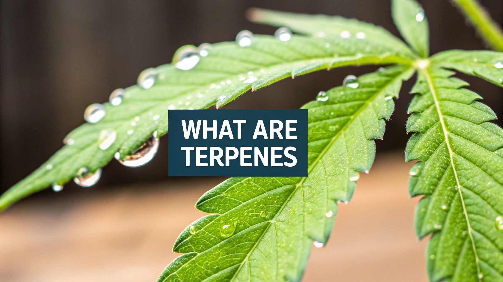
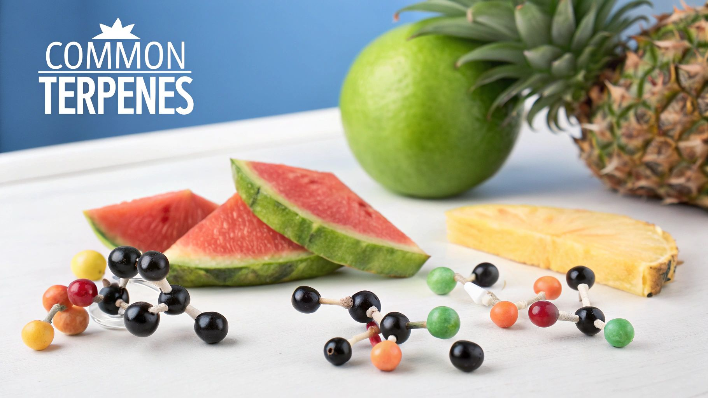

Beyond Aroma: What Are Terpenes in Weed Really About?
What are terpenes in weed? They're the aromatic compounds that give each strain its distinctive smell, from the skunky musk of OG Kush to the citrusy tang of Tangie. But terpenes do more than just make your bud smell good. These complex chemicals interact with your body and mind, influencing your overall cannabis experience. Think of them as the secret ingredients behind the effects you feel.
These aromatic powerhouses are produced in the glistening, mushroom-shaped trichomes, the same structures that produce cannabinoids like THC and CBD. This close proximity isn't accidental. Plants invest significant energy creating these compounds, primarily as a defense against pests and to attract pollinators.
This means that the delightful citrus scent of limonene, for example, isn't just for our enjoyment. It's a sophisticated evolutionary strategy that helps the cannabis plant survive. The piney aroma of pinene might deter insects, while the earthy musk of myrcene could attract beneficial ones. These aromatic compounds are a form of biological communication.
Terpenes play a crucial role in a strain's flavor and aroma. While specific data on terpene distribution in California is limited, the state's cannabis market is vast and growing. In 2024, the legal cannabis market in California produced 1.4 million pounds of cannabis, an 11.8% increase from the previous year. This growth could influence the variety of terpenes available. Common terpenes like limonene, myrcene, and pinene contribute to the therapeutic effects of many strains. Find more detailed statistics here: Learn more about California's cannabis production
Understanding the Role of Terpenes
Why does understanding terpenes matter for California cannabis consumers? It allows you to move beyond simple strain categories like "indica" and "sativa" and choose products based on their specific chemical makeup. This knowledge empowers you to personalize your cannabis experience.
For example, if you’re seeking relaxation, you might look for strains high in myrcene, known for its sedative properties. If you need an energy boost, limonene might be a better choice.
By understanding the complex interplay between terpenes and cannabinoids, you can unlock the full potential of cannabis. You can discover the perfect strains for your individual needs and preferences, transforming your cannabis journey from guesswork to informed decision-making.
The Terpene Gallery: Cannabis Aromatics Decoded

Walking into a cannabis dispensary, you're greeted by a symphony of scents. This isn't just the smell of cannabis itself; it's the complex aroma of terpenes. These aromatic compounds give each strain its unique olfactory fingerprint. Let's explore the fascinating world of cannabis terpenes and how they shape your cannabis experience.
Dominant Terpenes: A Sensory Exploration
Terpenes are the reason why a Blue Dream smells distinctly different from a Bubba Kush. They're why some strains smell of pine, while others have an earthy aroma. Importantly, terpenes interact with cannabinoids like THC and CBD, influencing their effects on the body. This interaction is known as the entourage effect.
-
Myrcene: Found in strains like OG Kush and Granddaddy Purple, myrcene is responsible for the classic "couch-lock" feeling. Its earthy, musky aroma often indicates a relaxing and potentially sedative experience. Many consumers report deep body relaxation with myrcene-dominant strains.
-
Limonene: As the name suggests, limonene gives strains like Super Lemon Haze and Jack Herer a citrusy scent. It's known for its mood-elevating properties and is often associated with stress relief. Many find limonene-rich strains invigorating and uplifting.
-
Pinene: Present in strains like Blue Dream and Romulan, pinene offers a piney aroma. This terpene is thought to counteract some of the memory impairment sometimes associated with THC. Users often report a clear-headed and focused experience with pinene-dominant strains, making them a popular choice for daytime use.
These are just a few examples of the diverse terpenes found in cannabis. Each contributes a unique aroma and potential effects, creating a nuanced and complex cannabis experience.
To further illustrate the variety and impact of terpenes, let's take a closer look at the following table:
Common Cannabis Terpenes and Their Properties: A comprehensive overview of the most prevalent terpenes found in California cannabis strains, their aromas, effects, and common strain examples.
| Terpene | Aroma Profile | Potential Effects | Common Strains |
|---|---|---|---|
| Myrcene | Earthy, Musky | Relaxing, Sedative, Body Relaxation | OG Kush, Granddaddy Purple |
| Limonene | Citrusy | Mood-Elevating, Stress Relief, Invigorating | Super Lemon Haze, Jack Herer |
| Pinene | Piney | Focus, Counteracts Memory Impairment, Clear-Headed | Blue Dream, Romulan |
| Caryophyllene | Spicy, Peppery | Pain Relief, Anti-inflammatory | GSC (Girl Scout Cookies), Original Glue |
| Linalool | Floral, Lavender | Calming, Anxiolytic, Sleep Aid | Lavender Kush, LA Confidential |
This table highlights the diverse aromas and potential effects associated with common cannabis terpenes, demonstrating how these compounds can contribute to a tailored cannabis experience. By understanding these profiles, consumers can better select strains that align with their desired outcomes.
Cultivating Terpene Profiles: A Grower's Perspective
Master growers recognize the importance of terpenes. They carefully manage environmental factors like light, temperature, and nutrients to influence terpene development during cultivation. This allows them to enhance specific terpene profiles and create strains with desired effects.
Regional growing conditions also significantly impact terpene expression. The unique climate and soil composition of a particular region can create distinctive terpene signatures. This means a strain grown in one location might have a slightly different terpene profile (and therefore a slightly different effect) than the same strain grown elsewhere.
Understanding terpene cultivation allows for a greater appreciation of the science and artistry behind cannabis cultivation. It also empowers consumers to make informed choices. By looking beyond strain names and considering terpene profiles, you can choose products that best suit your needs and preferences. Whether you seek relaxation, pain relief, or a creative boost, understanding terpenes is crucial to unlocking the full potential of cannabis.
The Entourage Effect: When Terpenes and Cannabinoids Dance

Beyond the pleasant aromas and flavors, terpenes in cannabis play a crucial role in shaping your overall experience. They interact with cannabinoids like THC and CBD, creating what's known as the entourage effect. This synergistic relationship is the science behind why whole-plant extracts offer different effects compared to isolated THC, even at the same THC percentage.
Understanding the Synergy
Think of it like an orchestra: THC and CBD are the main instruments, while terpenes act as the conductor, influencing the overall harmony and intensity. This means two strains with identical THC percentages can produce vastly different effects depending on their terpene profiles.
For example, a strain high in myrcene might create a relaxing sensation, while one rich in limonene could offer an uplifting and energetic experience. This difference highlights the complexity of cannabis and the importance of understanding the interplay of its various components.
Terpenes as Modulators
Specific terpenes can amplify or moderate cannabinoid effects. Beta-caryophyllene, for instance, uniquely binds to CB2 receptors, contributing to potential pain relief and anti-inflammatory benefits. Myrcene is thought to increase the permeability of the blood-brain barrier, potentially enhancing the absorption of other cannabinoids.
This complex interaction is why understanding terpenes allows for a more accurate prediction of effects than simply relying on indica/sativa labels. For a deeper dive into cannabis selection, check out this helpful resource: How to master cannabis selection
The California Context
The California cannabis market is a hub for terpene exploration. With the U.S. cannabis market projected to reach $45.3 billion by 2025, the diverse strains cultivated in California reflect a wide range of terpene profiles. Each profile offers unique aromas, flavors, and effects. This abundance allows consumers to fine-tune their cannabis experience based on specific terpene preferences. Discover more insights about the cannabis market.
Preservation and Extraction: Maintaining the Balance
Extraction specialists understand the importance of preserving these delicate compounds. Maintaining the natural terpene-cannabinoid ratios is crucial for replicating the full entourage effect. Synthetic terpene additions often fall short, lacking the complexity and synergy of naturally occurring blends. This underscores the importance of careful extraction and storage methods to protect these volatile molecules and deliver the full spectrum of cannabis benefits.
Beyond Pleasure: The Therapeutic Promise of Terpenes
Beyond THC and CBD, terpenes play a crucial role in the cannabis experience. These aromatic compounds give each strain its unique scent and offer a wide range of therapeutic benefits. Often overlooked in the pursuit of high THC content, terpenes are finally getting the attention they deserve. This section explores the evidence-based therapeutic potential of these fascinating compounds.
Exploring the Therapeutic Potential of Individual Terpenes
Research suggests that specific terpenes have therapeutic properties independent of cannabinoids. Linalool, the terpene responsible for lavender's calming scent, is being studied for its anxiolytic (anti-anxiety) effects. This means linalool might promote relaxation even without THC or CBD.
Beta-caryophyllene, found in black pepper and cloves, shows promise as an anti-inflammatory agent. Its spicy aroma might be linked to pain relief for some cannabis users.
Limonene, the terpene that gives citrus fruits their tangy smell, is being investigated for its potential mood-boosting properties.
Terpenes are also believed to contribute to the entourage effect, often associated with full-spectrum products. Learn more about full-spectrum CBD effects. This suggests terpenes may synergistically enhance the therapeutic benefits of cannabinoids.
Targeted Relief: Terpene Profiles and Personalized Medicine
Medical cannabis patients are increasingly seeking specific terpene profiles for targeted relief. This approach goes beyond THC content and recognizes the complex interplay between different cannabis compounds. For example, a patient with anxiety might seek strains high in linalool, while someone with inflammation might prioritize beta-caryophyllene. This shift towards personalized terpene profiles represents progress in cannabis medicine. Learn more in our article about navigating different cannabis products.
The Future of Cannabis Medicine: Terpene-Aware Treatment
Cannabis physicians are starting to incorporate terpene awareness into their treatment recommendations. This marks a significant step towards a more holistic approach to cannabis medicine. By understanding the therapeutic potential of individual terpenes, doctors can better tailor treatment plans.
This understanding is crucial as research continues and the role of terpenes becomes more widely recognized in the medical community. This development suggests a future where personalized terpene profiles are an integral part of cannabis-based therapies. Patients might one day receive recommendations not just for THC or CBD content, but also for specific terpene ratios tailored to their individual needs. This level of personalization represents an exciting future for cannabis therapy.
Terpene Hunting: Finding and Preserving These Delicate Compounds
These potent terpenes are incredibly fragile. Preserving their beneficial effects and delightful aromas requires careful handling and storage. Learn how to identify terpene-rich cannabis and preserve these volatile molecules with practical advice gleaned from cultivation and extraction experts.
Identifying Terpene-Rich Cannabis
A strong, complex fragrance is one of the first indicators of high terpene content. A rich terpene profile often expresses itself through a powerful aroma. Dense trichome coverage is another visual cue. Trichomes are the tiny, glistening, mushroom-shaped structures on cannabis buds. They produce both terpenes and cannabinoids.
Look for buds that are frosty and covered in these resinous glands. The color of the buds can also provide clues. Brighter colors sometimes, but not always, correlate with specific terpene profiles.
Protecting Your Terpenes: Storage is Key
That plastic baggie so common in cannabis storage is actually your terpenes’ worst enemy. Exposure to light, heat, and oxygen degrades these delicate compounds quickly. Treat terpenes like essential oils. You wouldn't leave a bottle of lavender oil open in the sun.
Proper storage is crucial for maintaining terpene integrity. Airtight, opaque glass jars stored in a cool, dark place are your best bet. This minimizes exposure to the elements that destroy terpenes. For further reading, check out this article on how to master terpene preservation.
Consumption Methods: Maximizing Terpene Delivery
How you consume cannabis significantly affects your terpene experience. Vaporizing at lower temperatures preserves more terpenes than smoking, as combustion destroys many of these volatile compounds.
When choosing edibles, look for products made with full-spectrum extracts. These retain the natural terpene profile of the cannabis plant. Sometimes, therapeutic cannabis use requires cessation. For helpful advice, read this article on how to stop smoking weed.
Temperature Control: Fine-Tuning Your Experience
Temperature plays a key role in terpene preservation and delivery. Grinding your cannabis releases terpenes into the air, so grind only what you need right before use.
Similarly, heating concentrates at lower temperatures during dabbing maximizes flavor and terpene preservation. Even the temperature of your storage environment matters. The ideal storage temperature range for preserving terpenes is between 60-70°F (15-21°C).
The following table summarizes various terpene preservation methods:
Terpene Preservation Methods for Cannabis
Comparison of different storage methods and consumption techniques and their effect on terpene preservation
| Method | Terpene Preservation Level | Recommended For | Avoid |
|---|---|---|---|
| Airtight Glass Jars | High | Long-term storage | Plastic baggies, clear containers |
| Low-Temperature Vaporizing | Medium | Flavorful, terpene-rich experience | High-temperature combustion (smoking) |
| Full-Spectrum Extracts | High | Edibles, tinctures | Extracts that don't specify "full-spectrum" |
| Cool, Dark Storage | High | Maintaining terpene integrity during storage | Warm, bright environments |
| Dabbing (Low Temp) | Medium | Concentrates | Dabbing (High Temp) |
Whether you're a connoisseur seeking the richest flavors or a medical patient looking for specific therapeutic benefits, understanding terpene preservation will significantly enhance your cannabis experience. By following these simple tips, you can ensure that every inhale or bite delivers the full potential of these powerful compounds.
Navigating the Market: Finding Terpene-Forward Cannabis
Looking for truly terpene-rich cannabis in California's bustling market takes more than just checking labels. Often, the terpene percentages tell an incomplete story. This guide will help you navigate the market and find the perfect terpene-rich products for your needs.
Deciphering the Label: Beyond the Percentages
While terpene percentages offer a starting point, they don't reveal the complete profile. A product high in myrcene, for example, might not offer the expected relaxation if other terpenes are out of balance. Furthermore, degradation during processing and storage can significantly affect terpene content.
This is where Certificates of Analysis (COAs) come into play. COAs provide a detailed breakdown of a product's chemical composition, including specific terpene and cannabinoid levels. They offer a more complete understanding of the product.
Talking to Your Budtender: Asking the Right Questions
Finding the right product involves more than just asking for "something relaxing." A knowledgeable budtender can be a valuable resource. Instead of asking about general strain categories, inquire about specific terpene profiles.
For instance, ask about products high in linalool for anxiety relief or limonene for an uplifting experience. Questions about cultivation and extraction techniques can also be helpful. These processes significantly impact terpene preservation.
From Cultivation to Consumption: Preserving Terpene Integrity
The journey of terpenes starts long before they reach the consumer. Cultivation practices heavily influence terpene development. Harvest timing, curing methods, and extraction techniques can either preserve or diminish these delicate compounds.
Look for brands that prioritize terpene preservation throughout their entire process. Sustainable growing methods, gentle extraction, and proper storage are all key indicators of quality.
Legislative Landscape and Testing Standards
California's testing requirements are important for product quality and transparency. While testing for cannabinoid potency is mandatory, terpene testing isn't always required. Choosing brands that exceed the minimum testing requirements demonstrates a commitment to quality and accurate information.
Finding Your Terpene Match: Budget-Friendly Options
Finding terpene-forward cannabis doesn't have to be expensive. Exploring different product formats like pre-rolls, flower, and concentrates can offer unique terpene experiences at various price points. By understanding terpenes and asking informed questions, you can discover high-quality, terpene-rich cannabis that fits your needs and budget.
Article created using Outrank